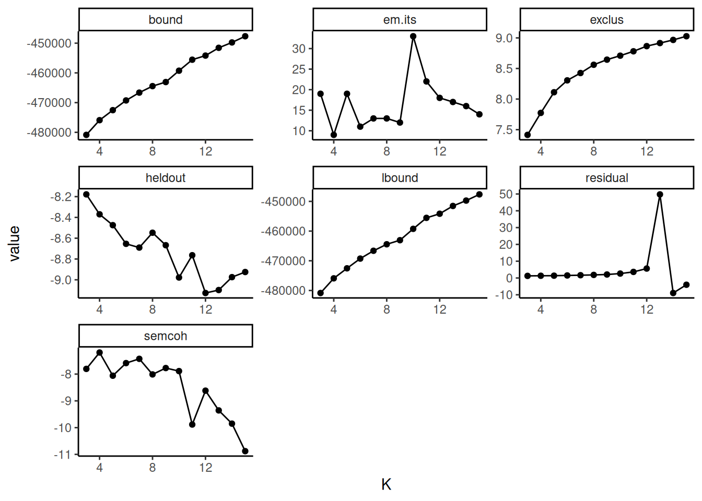
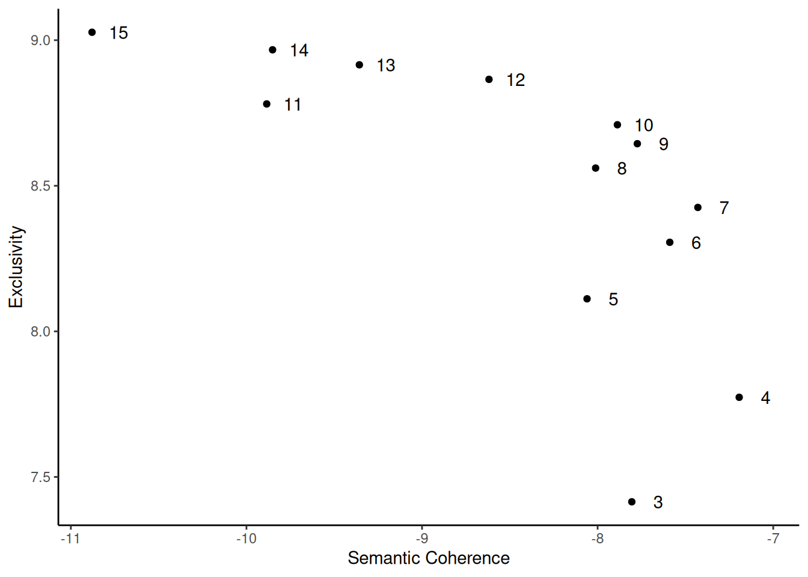
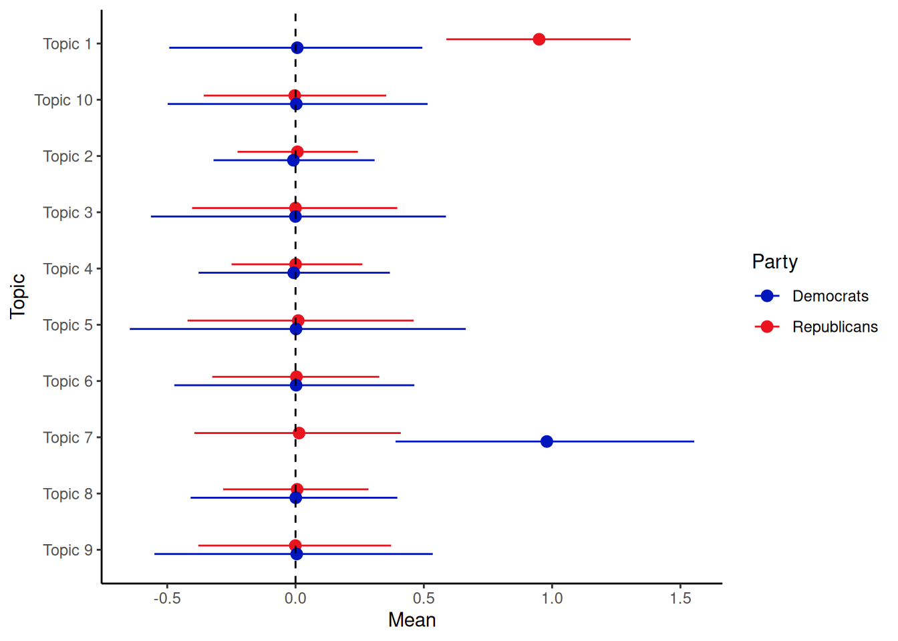

8.3 Structural Topic Model (STM)
The Structural Topic Model (STM) is another probabilistic topic modelling approach that extends traditional LDA by explicitly incorporating document metadata (such as publication date, author, source, or other document-level characteristics) into the model. STM can model:
- Topic prevalence: How the proportion of topics in a document relates to metadata. For example, how does the prevalence of “business” topics change over time or differ between authors?
- Topic content: How the words associated with a topic (the \(\beta\) distribution) vary according to metadata. For example, are the words used to discuss “the environment” different in documents from different political parties?
One of the key advantages of STM is that it uses this metadata to estimate the topic-document (\(\theta\)) and topic-word (\(\beta\)) distributions, potentially leading to more coherent and meaningful topics and allowing researchers to directly test hypotheses about the relationship between metadata and language use. Also, Unlike standard LDA, where the hyperparameters (\(\alpha\) and \(\beta\)) are typically fixed, STM allows them to be influenced by covariates.
Figure 8.1 provides a diagram illustrating the structure of the STM.
Figure 8.1: Plate diagram for a Structucal Topic Model.
Figure 8.1 shows stm in the form of a plate diagram. Here, \(X\) refers to the prevalence metadata; \(\gamma\), the metadata weights; \(\Sigma\), the topic covariances; \(\theta\), the document prevalence; \(z\), the per-word topic; \(w\), the observed word; \(Y\), the content metadata; \(\beta\), the topic content; \(N\), the number of words in a document; and \(M\), the number of documents in the corpus.
To run stm in R, we have to load the package, set a seed, convert our dfm to the stm format and place our documents, vocabulary (the tokens) and any other data in three separate objects (for later convenience):
library(stm)
library(quanteda)
set.seed(42)
data_inaugural_stm <- convert(data_inaugural_dfm, to = "stm")
documents <- data_inaugural_stm$documents
vocabulary <- data_inaugural_stm$vocab
meta <- data_inaugural_stm$metaThe first thing we have to do is find the number of topics we need. In the stm package, we can do this by using a function called searchK. Here, we specify a range of values that could include the ‘correct’ number of topics, which we then run and collect. Afterwards, we then look at several goodness-of-fit measures to assess which number of topics (which k) has the best fit for the data. These measures include exclusivity, semantic coherence, held-out likelihood, bound, lbound, and residual dispersion. Here, we run this for 2 to 15 possible topics.
In our code, we specify our documents, our tokens (the vocabulary), and our meta-data. Moreover, as our prevalence, we include parameters for Year and Party, as we expect the content of the topics to differ between both the Republican and Democratic party, as well as over time:
findingk <- searchK(documents, vocabulary, k, prevalence = ~Party + s(Year), data = meta,
verbose = TRUE)findingk_results <- as.data.frame(matrix(unlist(findingk$results), nrow = length(unlist(findingk$results[1]))))
names <- names(findingk$results)
names(findingk_results) <- namesLooking at findingk_results we find various values. The first, exclusivity, refers to the occurrence that when words have a high probability under one topic, they have a low probability under others. Related to this is semantic coherence which happens when the most probable words in a topic should occur in the same document. Held-out (or held-out log-likelihood) is the likelihood of our model on data that was not used in the initial estimation (the lower the better), while residuals refer to the difference between a data point and the mean value that the model predicts for that data point (which we want to be 1, indicating a standard distribution). Finally, bound and lbound refer to a model’s internal measure of fit. Here, we will be looking for the number of topics, that balance the exclusivity and the semantic coherence, have a residual around 1, and a low held-out. To make this simpler, we visualise our data. In the first graph we plot all the values, while in the second, we only look at the exclusivity and the semantic coherence (as they are the most important):
library(reshape2)
findingk_melt <- melt(findingk_results, id = "K")
findingk_melt$variable <- as.character(findingk_melt$variable)
findingk$K <- as.factor(findingk_results$K)
ggplot(findingk_melt, aes(K, value)) + geom_point() + geom_line() + facet_wrap(~variable,
scales = "free") + theme_classic()
ggplot(findingk_results, aes(semcoh, exclus)) + geom_point() + geom_text(data = findingk_results,
label = findingk$K, nudge_x = 0.15) + scale_x_continuous("Semantic Coherence") +
scale_y_continuous("Exclusivity") + theme_classic()
Based on these graphs, we decide upon 10 topics. The main reason for this is that for this number of topics, there is a high semantic coherence given the exclusivity. We can now run our stm model, using spectral initialization and a topical prevalence including both the Party and the Year of the inauguration. Also, we have a look at the topics, and the words with the highest probability attached to them:
n_topics <- 10
output_stm <- stm(documents, vocabulary, K = n_topics, prevalence = ~Party + s(Year),
data = meta, init.type = "Spectral", verbose = TRUE)
labelTopics(output_stm)Here, we see that the word us is dominant in most topics, making it a candidate for removal as a stop word in a future analysis. Looking closer, we find that the first topic refers to peace, the second, third and seventh to the world, the fourth and sixth to America, and the eighth to the government.
Finally, we can see whether there is any relation between these topics and any of the parameters we included. Here, let us look at any existing differences between the two parties:
While we can visualise this with the plot.estimateEffect option, the visualisation is far from ideal. Thus, let us use some data-wrangling and make the plot ourselves:
estimate_data <- plot.estimateEffect(est_assoc_effect, "Party", method = "pointestimate",
model = output_stm, omit.plot = TRUE)
estimate_graph_means <- estimate_data$means
estimate_graph_means <- data.frame(matrix(unlist(estimate_graph_means), nrow = length(estimate_graph_means),
byrow = TRUE))
estimate_graph_means <- data.frame(c(rep("Republicans", 10), rep("Democrats", 10)),
c(estimate_graph_means$X1, estimate_graph_means$X2))
estimate_graph_cis <- estimate_data$cis
estimate_graph_cis <- data.frame(matrix(unlist(estimate_graph_cis), nrow = length(estimate_graph_cis),
byrow = TRUE))
estimate_graph_cis <- data.frame(c(estimate_graph_cis$X1, estimate_graph_cis$X3),
c(estimate_graph_cis$X2, estimate_graph_cis$X4))
Topic <- c("Topic 1", "Topic 2", "Topic 3", "Topic 4", "Topic 5", "Topic 6", "Topic 7",
"Topic 8", "Topic 9", "Topic 10", "Topic 1", "Topic 2", "Topic 3", "Topic 4",
"Topic 5", "Topic 6", "Topic 7", "Topic 8", "Topic 9", "Topic 10")
estimate_graph <- cbind(Topic, estimate_graph_means, estimate_graph_cis)
names(estimate_graph) <- c("Topic", "Party", "Mean", "min", "max")
estimate_graph$Party <- as.factor(estimate_graph$Party)
estimate_graph$Topic <- as.factor(estimate_graph$Topic)
estimate_graph$Topic <- factor(estimate_graph$Topic, levels = rev(levels(estimate_graph$Topic)))Now, let us plot our intervals:
ggplot(estimate_graph, aes(Mean, Topic)) + geom_pointrange(aes(xmin = min, xmax = max,
color = Party), position = position_dodge(0.3)) + geom_vline(xintercept = 0,
linetype = "dashed", size = 0.5) + scale_color_manual(values = c("#0015BC", "#E9141D")) +
theme_classic()## Warning: Using `size` aesthetic for lines was deprecated in ggplot2 3.4.0.
## ℹ Please use `linewidth` instead.
## This warning is displayed once every 8 hours.
## Call `lifecycle::last_lifecycle_warnings()` to see where this warning
## was generated.
Here, we find that while the averages for the topic do seem to differ a little between both of the parties, all the intervals are overlapping, indicating that they are not that different.